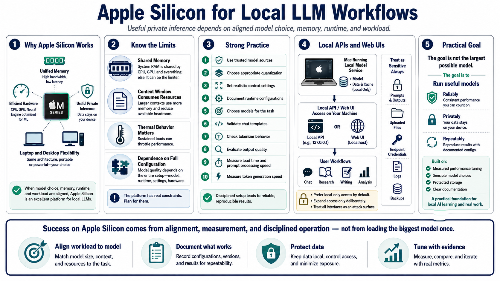

Course Summary and Key Takeaways
Connecting to LMS... Progress: in progress

Narration
Apple Silicon can be an effective platform for local LLM workflows when model choice, memory, runtime, and workload are aligned. Unified memory, efficient hardware, and strong local runtimes make useful private inference possible on laptops and desktops. But the platform still has limits: memory is shared, context consumes resources, thermal behavior matters, and model quality depends on the full configuration.
Strong practice starts with trusted model sources, appropriate quantization, realistic context settings, and documented runtime configurations. Choose models for the task, not for bragging rights. Validate chat templates, tokenizer behavior, output quality, load time, prompt processing, and token generation speed. Keep notes on the settings that work so the setup can be reproduced and improved.
Local APIs and web UIs can turn a Mac into a private AI workspace, but they need controlled exposure. Prefer local-only access until there is a deliberate reason to expand. Treat prompts, outputs, uploaded files, endpoint credentials, logs, and backups as sensitive. Local inference supports privacy only when data handling and service access are managed carefully.
The goal is not to run the largest possible model. The goal is to run useful models reliably, privately, and repeatably on the hardware available. With measured performance tuning, sensible model choices, protected storage, and clear documentation, Apple Silicon can be a practical foundation for local AI learning and real work.